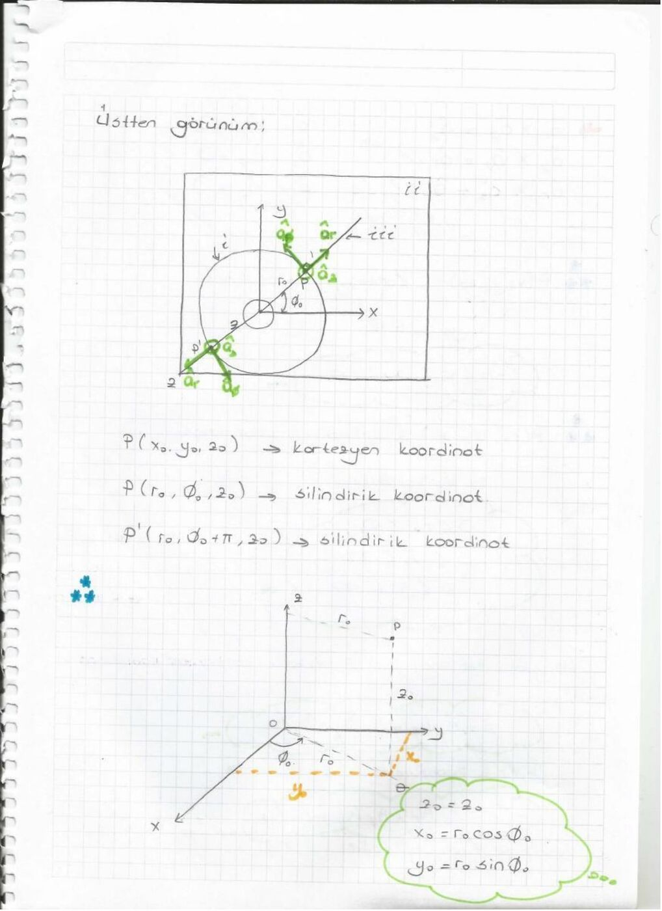
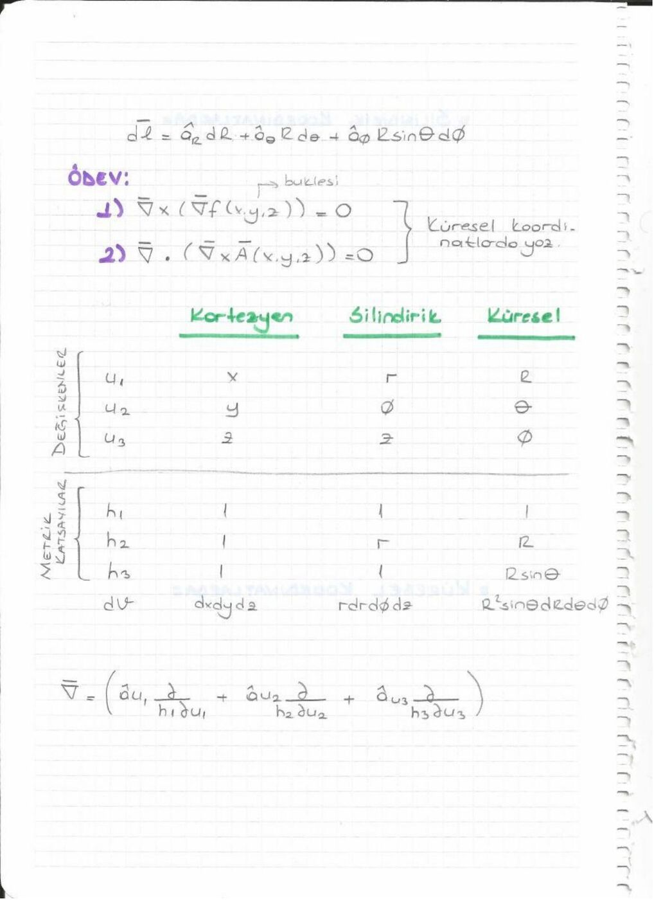
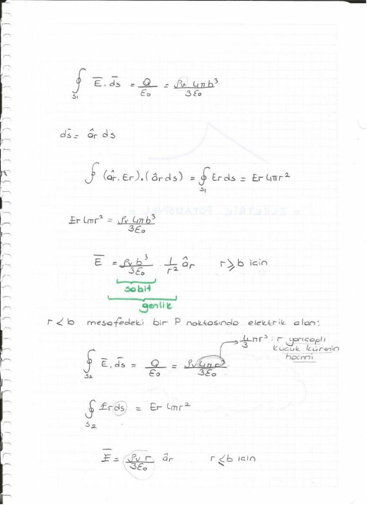
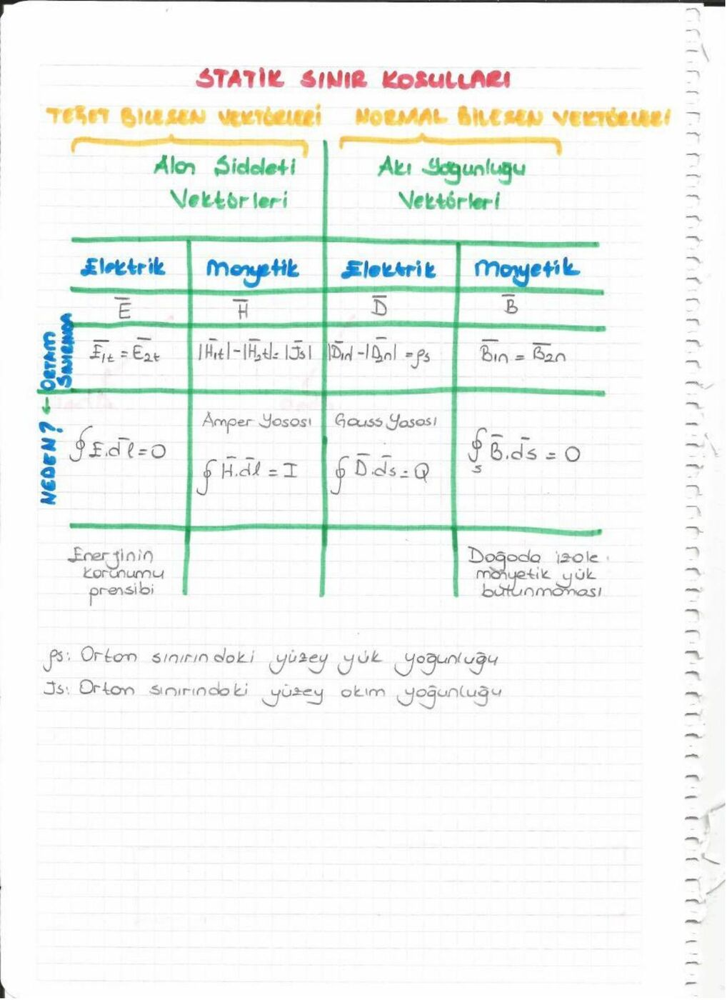

· EEM224
EEM224 Elektromanyetik I: Vektör Analizi, Elektrostatik ve Manyetostatik: Arkadaş Defteri
EEM224 – Elektromanyetik I · 20.03.2014 · 17.10.2026
Bu yazı, bir arkadaşın ders notu olan 88 sayfalık Elektromanyetik I defterinin konu ve formül dökümüdür. Kişisel bilgiler çıkarıldı. Kaynak PDF'nin oluşturulma tarihi 20 Mart 2014'tür. İsimsiz dosya adıyla yeniden oluşturulan, boyutu küçültülmüş PDF yazının sonunda indirilebilir.
Spektrum ve dalgalar (sayfa 1–5)
Defter radyo, mikrodalga, kızılötesi, görünür ışık, morötesi, X ve gama ışını bölgelerini gösteren bir spektrumla başlar. Akustik dalgalar ayrıca gösterilir. Enine dalgada salınım ilerlemeye diktir; boyuna dalgada paraleldir.
λ = vT = v/f, f = 1/T. Boşlukta elektromanyetik dalga için v = c ≈ 3×10⁸ m/s. Sabit hızda frekans yükselince dalga boyu küçülür.
Not: Defterde frekans yükselmesiyle menzilin azalması ve bilgi kapasitesinin artması genel bir kural gibi sıralanmıştır. Bunlar ortam, kayıp, bant genişliği ve sistem koşullarına bağlıdır.
Skaler ve vektörel alan (sayfa 6–9)
Skaler büyüklüğün yalnız değeri; vektörün büyüklüğü ve yönü vardır. Sıcaklık ve yük yoğunluğu skaler, kuvvet ve elektrik alan vektörel örneklerdir. Konuma bağlı bu büyüklükler alanları oluşturur.
A = â_A |A|, â_A = A/|A|.
Toplama üçgen veya paralelkenar yöntemiyle yapılır. A−B, A+(−B)'dir. Skaler çarpma kA, vektörün büyüklüğünü ve işarete göre yönünü değiştirir.
A·B = |A||B|cosθ; A×B = â_n |A||B|sinθ.
A·B = B·A, A×B = −B×A, A·A = |A|² ve A×A = 0. A'nın B yönündeki skaler izdüşümü A·â_B'dir.
Ortogonal koordinatlar (sayfa 10–18)
Koordinat sisteminin amacı noktayı ve vektörü ifade etmektir. Kartezyen sistemde x, y ve z eksenleri birbirine diktir. Silindirik koordinatlar r,φ,z; küresel koordinatlar R,θ,φ ile gösterilir.
- Silindirik: x = r cosφ, y = r sinφ, z = z.
- Küresel: x = R sinθ cosφ, y = R sinθ sinφ, z = R cosθ.
- Silindirik yarıçap r = √(x²+y²); küresel yarıçap R = √(x²+y²+z²).
- Küresel kutupsal açı 0≤θ≤π; azimut 0≤φ<2π.
Kartezyen bileşenlerle |A| = √(A_x²+A_y²+A_z²), A·B = A_xB_x+A_yB_y+A_zB_z.
A×B = (A_yB_z−A_zB_y)â_x+(A_zB_x−A_xB_z)â_y+(A_xB_y−A_yB_x)â_z.

Çizgi, yüzey ve hacim integralleri (sayfa 19–23)
Bir kuvvetin küçük yol boyunca yaptığı iş ΔW = F·Δl'dir. Yol boyunca toplam iş W = ∫F·dl olur. Kuvvet yola dikse katkı sıfırdır.
Yüzeyden geçen akı Φ = ∫A·dS ile bulunur. Yüzey vektörü normale yönelir; alanın teğet bileşeni katkı vermez. Kapalı yüzeyde ∮ kullanılır.
Yoğunluğu d(x,y,z) olan cismin kütlesi m = ∫_V d dv'dir. Burada vektörel değil skaler çarpım vardır.
Gradyant, diverjans, bukle (sayfa 24–28)
∇ = â_x∂/∂x + â_y∂/∂y + â_z∂/∂z.
Gradyant: ∇f = â_x∂f/∂x+â_y∂f/∂y+â_z∂f/∂z. Skalerden vektör üretir ve en hızlı artış yönünü gösterir. f = 3x+4y+5z için ∇f = 3â_x+4â_y+5â_z; f = 3x²+4y+5z² için ∇f = 6xâ_x+4â_y+10zâ_z.
Diverjans: ∇·A = ∂A_x/∂x+∂A_y/∂y+∂A_z/∂z. Vektörden skaler üretir.
Bukle: ∇×A = (∂A_z/∂y−∂A_y/∂z)â_x+(∂A_x/∂z−∂A_z/∂x)â_y+(∂A_y/∂x−∂A_x/∂y)â_z. Vektörden vektör üretir.
İki sıfır özdeşliği: ∇×(∇f)=0 ve ∇·(∇×A)=0.
İntegral örnekleri ve metrik katsayılar (sayfa 29–36)
z=0 düzleminde önce x sonra y yönünde ilerlenen yol için A=3xâ_x+5yâ_y+3xy e^z â_z alanının çizgi integrali 3x₀²/2+5y₀²/2 bulunur. Yol düzlemde olduğundan z bileşeni katkı yapmaz.
A_z=5 olan alanın z=0 düzlemindeki dikdörtgen yüzeyden akısı 5(x₁−x₀)(y₁−y₀)'dır.
Çeyrek çember üzerinde dl = â_φ r dφ kullanılır. Defterde A_φ=r² için, yarıçap a olduğunda integral πa³/2 olarak bulunur.
| Koordinatlar | Metrik katsayılar | Hacim elemanı |
|---|---|---|
| Kartezyen x,y,z | 1,1,1 | dx dy dz |
| Silindirik r,φ,z | 1,r,1 | r dr dφ dz |
| Küresel R,θ,φ | 1,R,R sinθ | R² sinθ dR dθ dφ |
Silindirik dl = â_r dr+â_φ r dφ+â_z dz; küresel dl = â_R dR+â_θ R dθ+â_φ R sinθ dφ.
Quiz örneğinde A·B=A·C eşitliğinin tek başına B=C anlamına gelmediği açıklanır. A·(B×A)=0, çünkü B×A vektörü A'ya diktir.

Diverjans ve Stokes teoremleri (sayfa 37–38)
∮_S A·dS = ∫_V (∇·A)dv.
∮_C A·dl = ∫_S (∇×A)·dS.
Defter, bir alanın diverjans ve buklesiyle belirlenmesine de değinir.
Not: Alanın tekil olarak belirlenmesi için uygun sınır koşulları da gerekir. Stokes teoremindeki yüzeyin kendisi kapalı olmak zorunda değildir; kontur yüzeyin sınırıdır.
Elektrostatik postülalar ve Coulomb yasası (sayfa 38–50)
E = lim_(q→0) F/q. Statik alanda ∇×E=0 ve ∇·E=ρ_v/ε₀.
İntegral biçimler: ∮_C E·dl=0, ∮_S E·dS=Q/ε₀. Kapalı yol integrali sıfır olduğu için iki nokta arasındaki integral yoldan bağımsızdır.
Orijindeki noktasal yük için E = qâ_R/(4πε₀R²). r′ konumundaki yükün r noktasındaki alanı:
E(r) = q(r−r′)/(4πε₀|r−r′|³).
Birden fazla yük varsa vektörel toplama yapılır:
E(r) = (1/4πε₀)Σ qᵢ(r−rᵢ′)/|r−rᵢ′|³.
Defterde aynı büyüklükte iki yükün orta noktada birbirini götürmesi ve farklı konumlardaki yüklerin bileşenlerine ayrılması örneklenir.
Sürekli dağılımlar ve Gauss yasası (sayfa 51–57)
Hacimsel dağılım için dq=ρ_v dv; her küçük yükün Coulomb katkısı entegre edilir. Simetrik yapılarda Gauss yüzeyi seçmek işlemi kolaylaştırır.
- Sonsuz düzgün yüklü tel: E = ρ_l â_r/(2πε₀r).
- Sonsuz düzgün yüklü düzlem: E = ±ρ_s â_z/(2ε₀).
- Noktasal yük alanı uzaklığın karesiyle, tel alanı uzaklıkla ters orantılıdır; sonsuz düzlem alanı uzaklıktan bağımsızdır.
Yarıçapı b olan, içinde sabit ρ_v bulunan kürede:
E = ρ_v r â_r/(3ε₀), r<b;
E = ρ_v b³ â_r/(3ε₀r²), r>b.
Alan içeride doğrusal artar; yüzeyden sonra 1/r² ile azalır.

Potansiyel, eşpotansiyel ve dipol (sayfa 58–68)
E = −∇V. Potansiyel farkı V₂−V₁ = −∫₁²E·dl'dir. V(∞)=0 seçildiğinde noktasal yük için V=q/(4πε₀R).
Potansiyeller skaler olarak, alanlar vektörel olarak toplanır. Eşpotansiyel yüzeyler alan çizgilerine diktir; bu yüzeylerde yük taşınırken elektriksel iş sıfırdır.
±q yüklerinin d ayrımı için dipol momenti p=qd'dir; yönü negatiften pozitife alınır. Uzak bölgede (R≫d):
V ≈ qd cosθ/(4πε₀R²) = p·â_R/(4πε₀R²).
Manyetostatik alanlar ve Ampère yasası (sayfa 69–74)
Durgun manyetik alanları hareket eden yükler veya mıknatıslar oluşturur. ∇·B=0, boşlukta ∇×B=μ₀J.
İntegral biçimler ∮_S B·dS=0 ve ∮_C B·dl=μ₀I'dır. Manyetik alan çizgileri kapalıdır. Hacim akım yoğunluğunun birimi A/m², yüzey akım yoğunluğunun birimi A/m'dir.
Yarıçapı b olan uzun düz iletkende akım kesite düzgün dağılmışsa:
B = μ₀Ir â_φ/(2πb²), r<b;
B = μ₀I â_φ/(2πr), r>b.
N sarımlı ideal toroidin iç bölgesinde B = μ₀NI â_φ/(2πr); merkez boşluğunda ve dış bölgede ideal modelde alan sıfırdır. Dairesel akım halkasının manyetik dipol momenti m=Iπb²â_z olarak verilir.
Manyetik sınır koşulları (sayfa 75–80)
İki ortamın sınırında normal manyetik akı yoğunluğu süreklidir: B₁n=B₂n. Teğet H bileşenlerinin farkı yüzey akım yoğunluğuyla ilişkilidir. Yüzey akımı yoksa H₁t=H₂t.
Doğrusal izotrop ortam için B=μH. Böylece yüzey akımı yokken B₁t/μ₁=B₂t/μ₂. Notta ε, μ ve σ ortamı tanımlayan parametreler olarak sıralanır.

Elektrostatik enerji ve polarizasyon (sayfa 81–88)
Bir yük sisteminin enerjisi, yükleri sonsuzdan yerlerine getirmek için yapılan toplam iştir. İki yükte W=Q₁Q₂/(4πε₀R₁₂)=½(Q₁V₁+Q₂V₂).
N ayrık yükte W=½ΣQᵢVᵢ; sürekli hacim yükünde W=½∫ρ_vV dv.
Dielektrikte birim hacim başına dipol momenti polarizasyon P'dir. Birimi C/m². Elektrik akı yoğunluğu D=ε₀E+P; doğrusal ortam için D=εE olarak yazılır. Gauss yasasının genel biçimi ∮D·dS=Q'dur.
Not: Defterin bazı sayfalarında elektrik akı yoğunluğu biriminde hacimsel yoğunlukla karışabilecek notasyonlar vardır; D ve P için birim C/m², ρ_v için C/m³'tür.